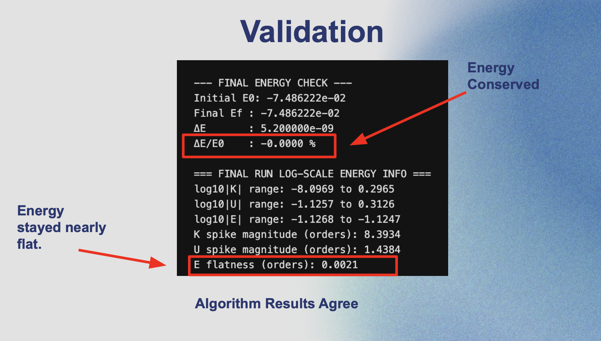
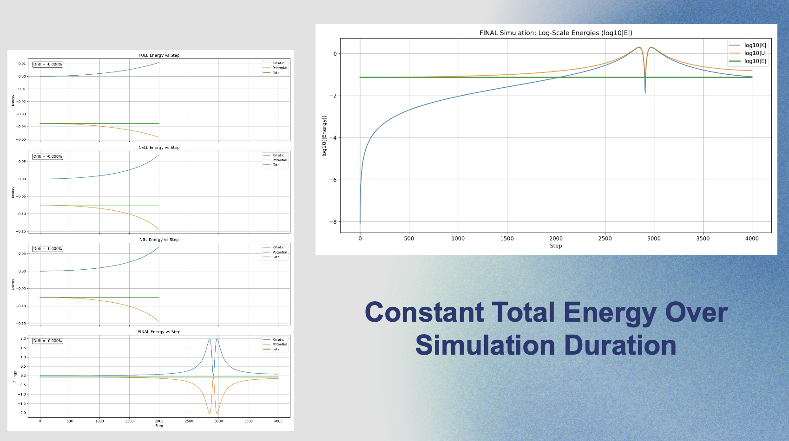

Project Overview
This ongoing senior design project develops an autotuning framework that automatically identifies the most performant Molecular Dynamics (MD) algorithm for a user’s hardware. Instead of manually tuning code for each CPU or GPU platform, the framework benchmarks algorithm–hardware mappings at runtime and selects the fastest one. Our goal is to democratize high-performance MD simulation and reduce the barrier to scalable scientific computing.
My Contributions
– Designed and implemented a reusable MD simulation framework used across all algorithm implementations so far.
– Served as Project Lead (Sept–Oct 2025) coordinating system design, benchmarking, and roadmap planning.
– Supported CPU & GPU implementations of Cell-List and Neighbor-List-based MD with tunable variants.
– Built tooling to profile how algorithm–hardware mappings influence runtime behavior.
– Project continues through May 2026 for senior design.
System Architecture
The autotuner runs short MD samples across multiple algorithms and records performance in a timing bank. The fastest algorithm is then used for the full simulation.

Product in Use
One command launches autotuning, prints performance comparisons, and runs the full simulation using the fastest method.

Validation & Physical Accuracy
To confirm numerical correctness, the framework verifies total-energy drift and confirms algorithm agreement. Our runs show near-zero drift and stable dynamics.

Energy Behavior Over Time
Energy plots confirm that the system conserves total energy over long simulations — a key correctness metric in MD.
